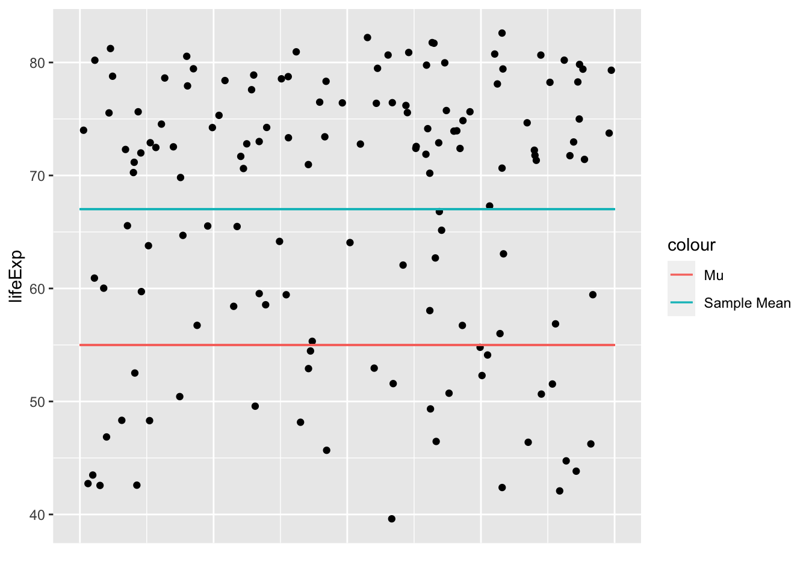

In all general linear models you are trying to compare how much of the variance is explained by a model compared to what’s not being explained by a model. In short
For each type of t-test, the way we calculate this is slightly different:
One-Sample t-tests
Sum of Squares
One sample t-tests try to explain whether variance of data is better explained around one specific value (sample mean) compared to another (previously assumed value). For example, imagine that you wanted to test whether life expectancy is higher than 55 across the world:
Your \(\mu\) would be 55. This can be thought of as the assumed population mean that we want to use our sample to test.
Your \(\bar{x}\) would be the sample mean.
Let’s visualise these values using gapminder data from 2007:
library(ggplot2)library(gapminder)gapminder_2007 <-subset( gapminder, # the data set year ==2007)ggplot(gapminder_2007, aes(x=year,y=lifeExp)) +geom_jitter() +xlab("") +theme(axis.text.x =element_blank()) +theme(axis.ticks.x =element_blank()) +geom_segment(aes(x =2006.6,xend =2007.4,y =55,yend =55,color ="Mu" ) ) +geom_segment(aes(x =2006.6,xend =2007.4,y =mean(lifeExp),yend =mean(lifeExp),color ="Sample Mean" ) )

We want to create a model that explains any variance around the population mean (\(\mu\)). The sample mean could be modeled as such:
\[
y = \bar{y} + e
\]
Y is the data point value you are trying to predict. Note that for this formula you will always have the same prediction.
\(\bar{y}\) is mean of y. You are only interested in whether predicting y based on y’s mean captures a significant amount of the variance of the y-values around the \(\mu\).
\(e\) is the error, i.e. the residuals that the module do not predict effectively.
If the sample mean is a useful model, then it will explain a large proportion of the variance around the “population” mean (and will also suggested that there is significant reason to reject the population mean). The total variance using sum of squares is thus:
\[
SS_{total} = \sum(x_i-\mu)^2
\]
Which for the above data would give us:
sum((gapminder_2007$lifeExp -55)^2)
[1] 41025.16
So your explained variance by this model is any difference between the Mu (\(\mu\)) and the sample mean (\(\bar{x}\)). To summarise this using sum of squares, for each data point you subtract the two from each other and square them, as this difference is what we can explain of variance away from the MU:
Unexplained variance would be the residuals around the sample mean, as this is variance that is not explained by the model. Conveniently, we can calculate the sum of squared around the sample mean quite elegantly:
F-values are squares of t-values, so let’s see if this is true here also:
sqrt(f_value)
[1] 11.85163
t.test(gapminder_2007$lifeExp, mu=55)
One Sample t-test
data: gapminder_2007$lifeExp
t = 11.852, df = 141, p-value < 2.2e-16
alternative hypothesis: true mean is not equal to 55
95 percent confidence interval:
65.00450 69.01034
sample estimates:
mean of x
67.00742
Great. So now that we’ve highlighted the GLM approach works for t-tests, can we see how our formula for a GLM simplifies to the formula we usually use for one-sample t-tests:
\(SS_{explained}\) is the sum of squares of the data explained by the model
\(SS_{unexplained}\) is the sum of squares of the data not explained by the model (i.e. the residuals)
\(df_{explained}\) is the degrees of freedom for the model. As there is only one predictor (the sample mean) and it’s only got 2 levels (1 or 0, however, in all cases the model is comparing the data to the mean, so it’s less intuitive that there are 2 levels).
Paired samples t-tests
Paired samples t-tests can be approached like 1-sample t-tests, but you first of all need to collapse the data to have a single variable to compare to a \(\mu\) of zero. Let’s do this for gapminder data, comparing life expectancies between 2002 and 2007:
gapminder_2002_2007_life_exp <- gapminder$lifeExp[gapminder$year ==2007] - gapminder$lifeExp[gapminder$year ==2002]t.test(gapminder_2002_2007_life_exp, mu =0)
One Sample t-test
data: gapminder_2002_2007_life_exp
t = 14.665, df = 141, p-value < 2.2e-16
alternative hypothesis: true mean is not equal to 0
95 percent confidence interval:
1.135561 1.489439
sample estimates:
mean of x
1.3125
The above suggests that life expectancy was significanctly different. Let’s see if we get the exact same value when we use a paired t-test in R:
Paired t-test
data: gapminder$lifeExp[gapminder$year == 2007] and gapminder$lifeExp[gapminder$year == 2002]
t = 14.665, df = 141, p-value < 2.2e-16
alternative hypothesis: true mean difference is not equal to 0
95 percent confidence interval:
1.135561 1.489439
sample estimates:
mean difference
1.3125
Looks identical. Let’s compare formulas to see why this is:
\(\bar{x_3}\) is the mean of the result you get when you subtract condition 2 from condition 1 for each participant, i.e. \(mean(x_1-x_2)\).
\[
\sigma_{pooled} = \sqrt{\frac{\sigma_1^2 + \sigma_2^2}{2}} OR \frac{\sum(x_1 - x_2)^2}{N-1}
\] One way effectively gets the average of the standard deviations of condition and 1. The second way gets the standard deviation of the differences between conditions 1 and 2. Both give you the same outcome.
\(N\) is the number of participants
You can rewrite the above formula to compare \(\bar{x_3}\) to \(\mu\), as we know \(\mu\) is zero, which would make this formula (effectively) identical to the one above for one-sample t-tests: